日前有發佈一篇透過AutoCAD 2012建模的[作品]電鑽，AutoCAD對於平滑曲面的功能真的不是很齊全！個人我是比較追求完美（精益求精），所以想說透過跨軟體組合搭配，效果方面出奇的好，在此也跟大家一同分享喔～
這回我再次嘗試以Rhino建模，由於第一次使用Rhino，雖然可以按照書上的步驟，但是這本書藉是編著的，有很多細節均未交代，所以還需要花時間反覆練習與測試，終於皇天不負苦心人，花了我大概二天的時間，終於有了第一個Rhino作品～
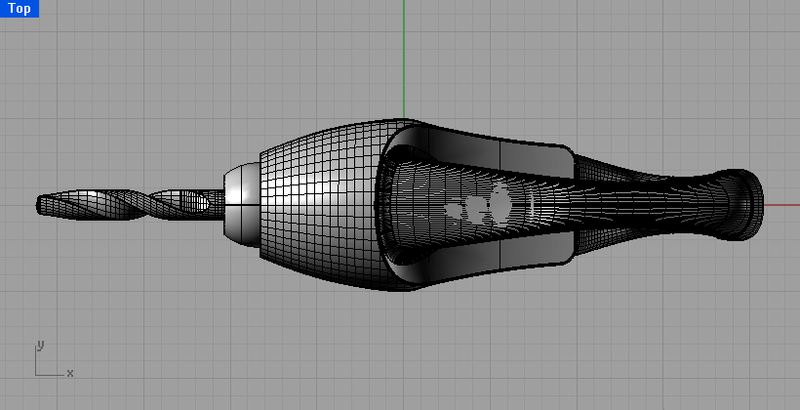
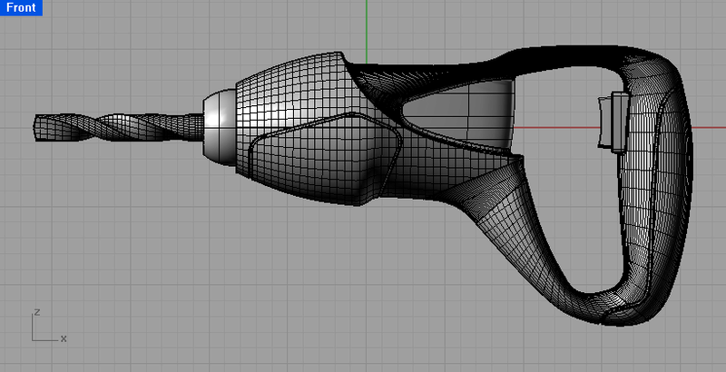
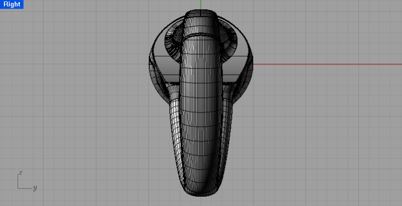
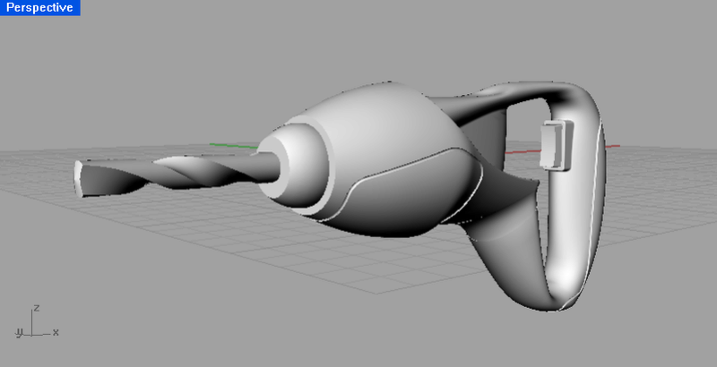
關於彩現貼材質部分我透過熟悉的AutoCAD來快速幫我完成，但是在Rhino轉出到AutoCAD面臨到一些問題，在這裡測試了幾種方式，發現使用IGES格式與AutoCAD相容性最高，從AutoCAD插入IGES檔案後，對於AutoCAD也比較不耗效能（耗資源），底下分幾種！
Rhino有幾種轉檔方式，第一種可以直接使用另存新檔方式，檔案格式可以選用DWG或DXF，再來可以直接透過AutoCAD開啟。
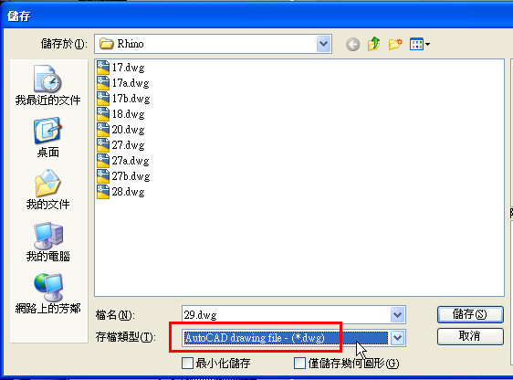
需注意在匯出DWG檔同時，要記得更改內定值，可依照使用者需求選擇模型類型！
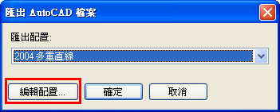
一開始預設值為「網格」，這個效果我覺得很耗效能，在AutoCAD中會因不同的視覺形式造成LAG(延遲)
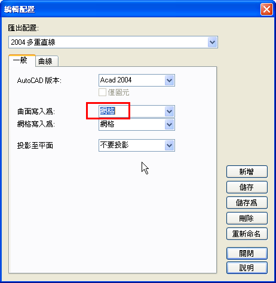
AutOCAD開啟時物件類型會轉換成為「聚合面網面」，大家光看到「掣點」是不是就很頭疼啊～
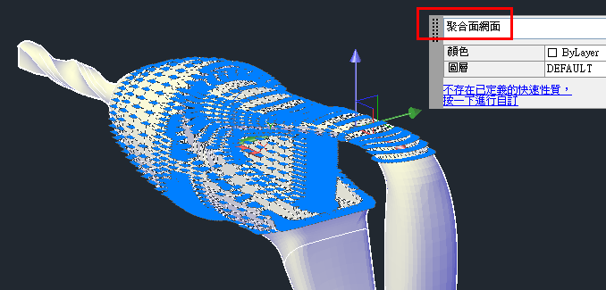
一般使用AutoCAD 2011以下版本，我會建議請將物件類型轉成「SOLIDES」
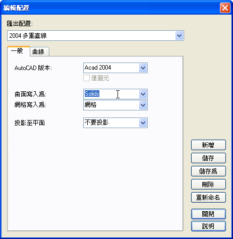
這樣在AutoCAD中打開，物件類型就會是3D實體。但是在Rhino中的模型需要是「封閉的曲面」才可以轉出為3D實體。
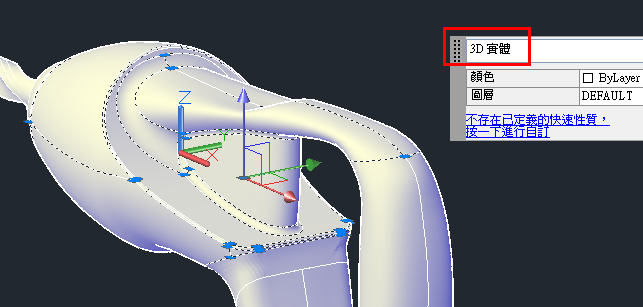
再來一樣還是那句老話「新功能新優勢」，AutoCAD 2012可以匯出及匯入IGES格式，這樣的3D模型比較不會有破面的情形產生，在Rhino另存新檔選擇IGES格式！
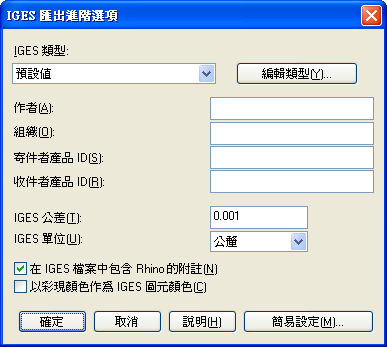
在AutoCAD 2012選擇功能區上的「匯入」功能按鈕。
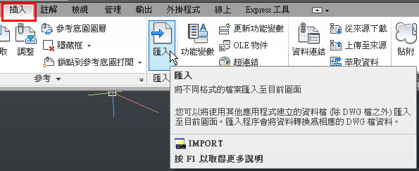
檔案類型請切換到「IGES」格式，再來瀏覽選用剛剛Rhino轉出的檔案。
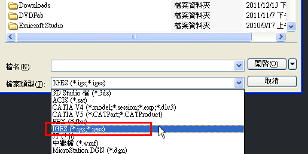
AutoCAD 2012會出現提示「正在處理後台工作」對話訊息
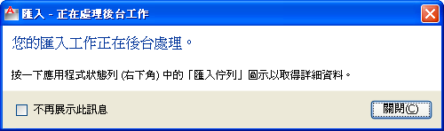
使用者可以在畫面右下方查看「匯入工作」
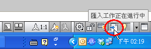
完成後按滑鼠右鍵選擇「插入」即可
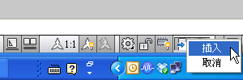
根據預設值顏色為黑色，建議可以在AutoCAD中分群組或分圖層，再來就比較方面貼材質作業
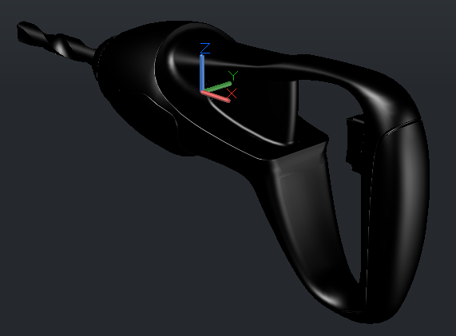
轉換完畢的模型為「曲面」，這類型還可以使用在平面快照，可以說是一舉數得啊～
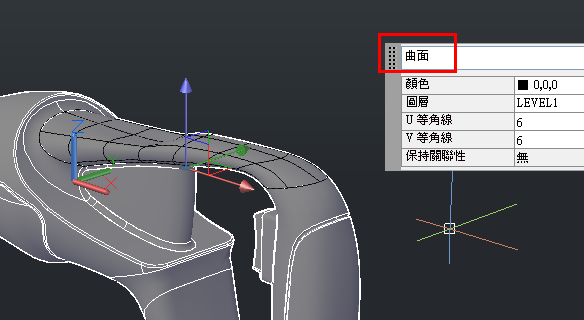
透過AutoCAD新版的材質瀏覽器，可以選用預設的材質庫，讓使用者貼材質非常簡單又方便～
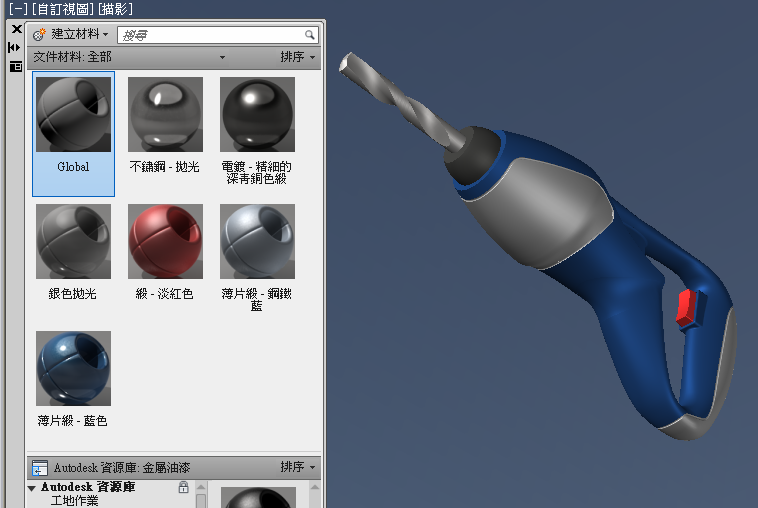
影片展示：
AutoCAD 2012彩現：
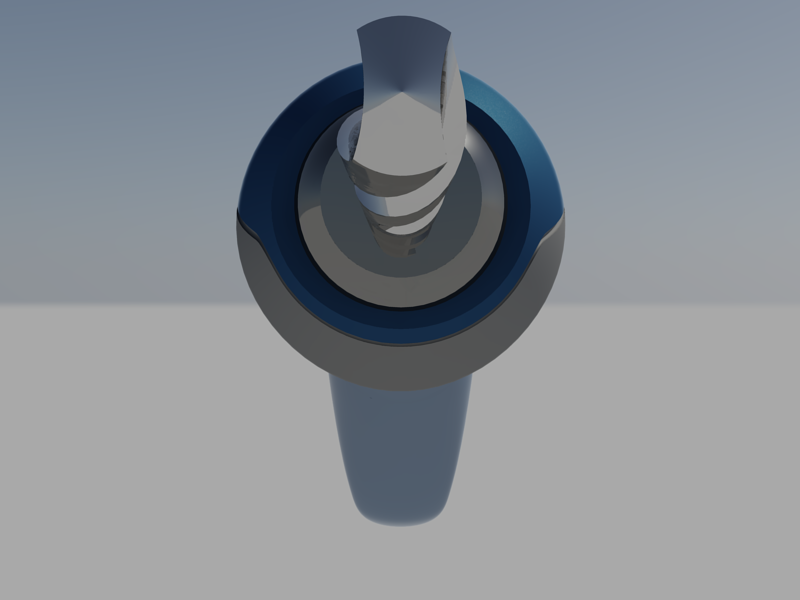
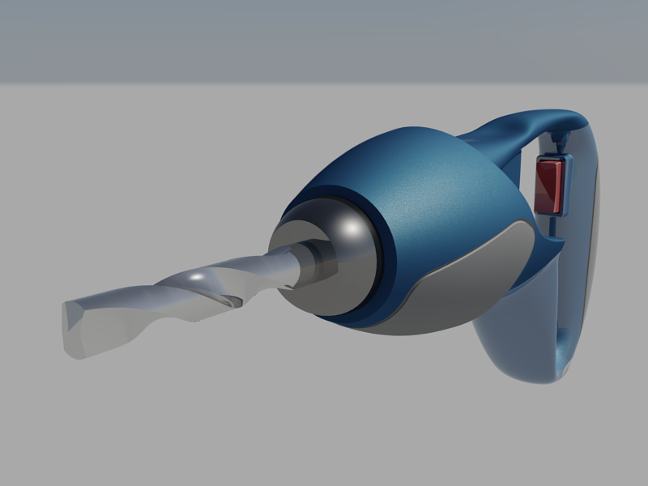
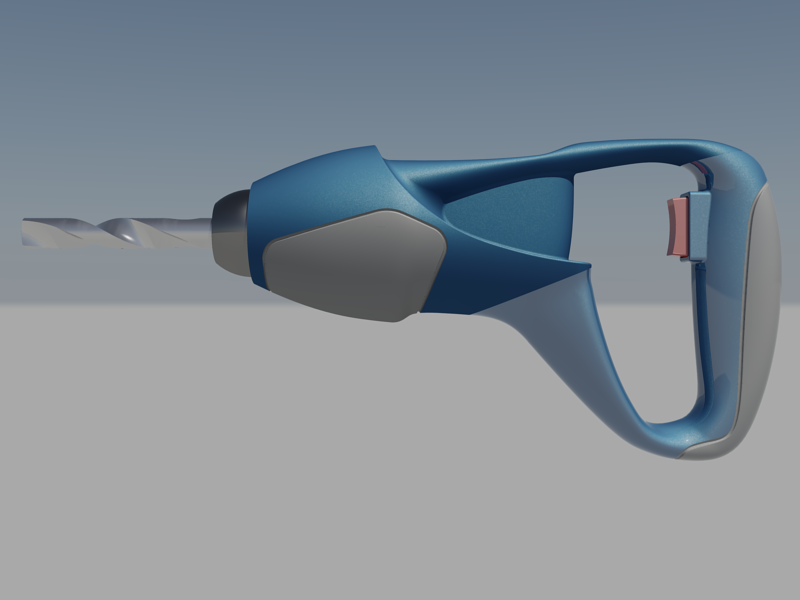
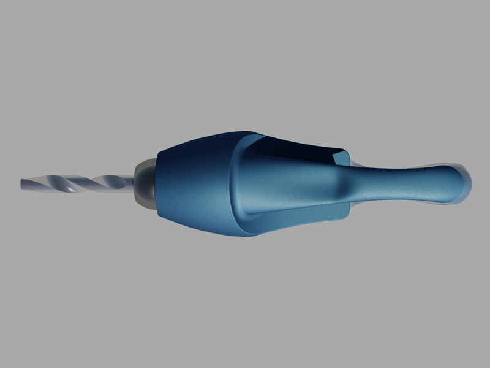
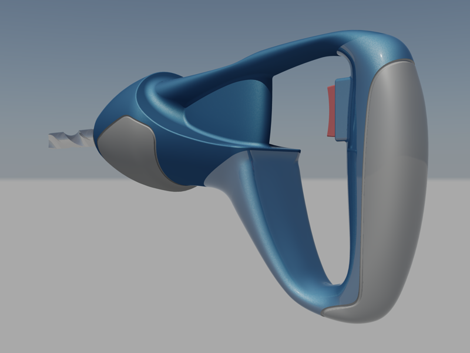
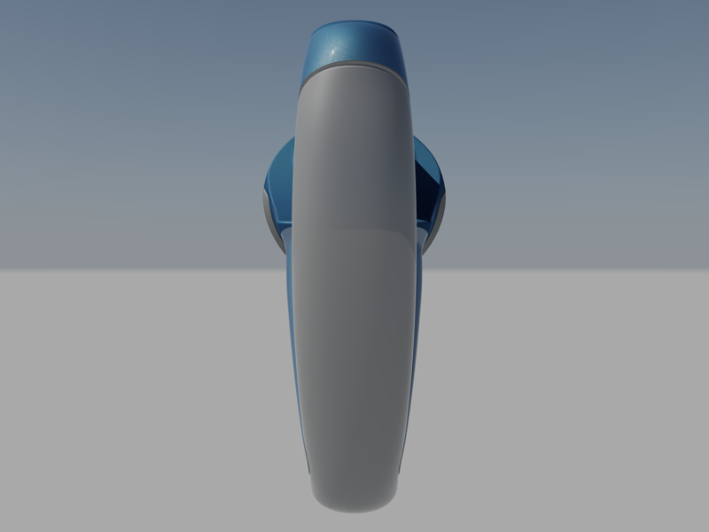
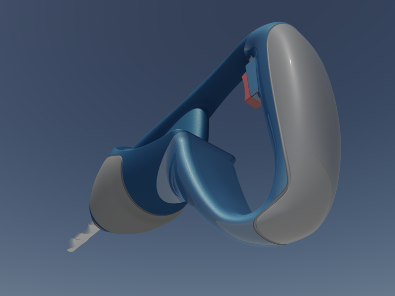
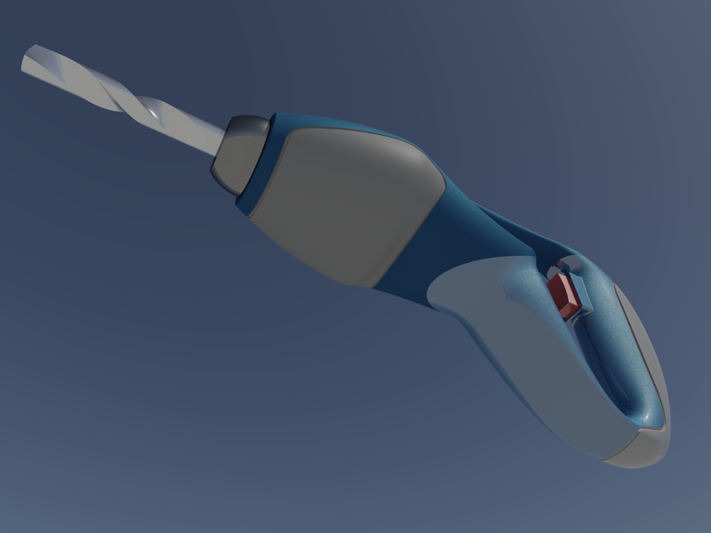
再來還可搭配 AutoCAD 2012 3D新功能 VIEWBASE基礎視圖，讓你的配置中快速建立三視圖投影。
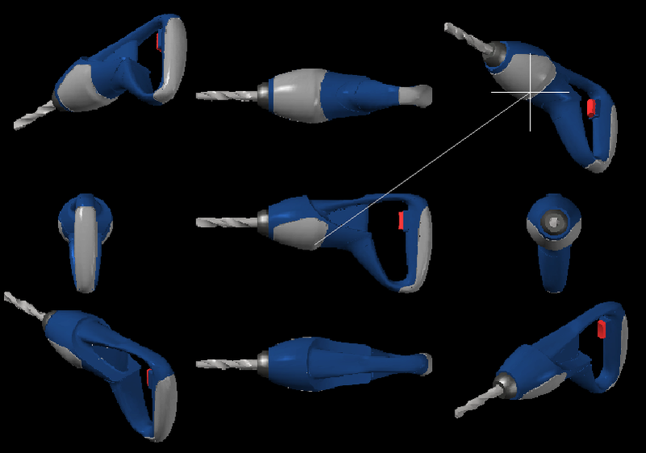
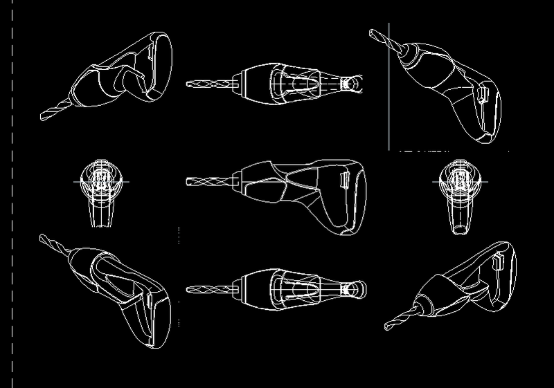